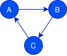

Standard library
Send and Sync traits
The Send and Sync traits (defined in std::marker or core::marker) are
marker traits used to ensure the safety of concurrency in Rust. When implemented
correctly, they allow the Rust compiler to guarantee the absence of data races.
Their semantics is as follows:
- A type is
Sendif it is safe to send (move) it to another thread. - A type is
Syncif it is safe to share a immutable reference to it with another thread.
Both traits are unsafe traits, i.e., the Rust compiler does not verify in any way that they are implemented correctly. The danger is real: an incorrect implementation may lead to undefined behavior.
Fortunately, in most cases, one does not need to implement it. In Rust,
almost all primitive types are Send and Sync, and for most compound types
the implementation is automatically provided by the Rust compiler.
As mentioned in Rustonomicon, notable exceptions are:
- Raw pointers are neither
SendnorSyncbecause they offer no safety guards. UnsafeCellis notSync(and as a resultCellandRefCellaren’t either) because they offer interior mutability (mutably shared value).Rcis neitherSendnorSyncbecause the reference counter is shared and unsynchronized.
Automatic implementation of Send (resp. Sync) occurs for a compound type
(structure or enumeration) when all fields have Send types (resp. Sync
types).
Preventing from automatically implementing Send or Sync can be made by using
internal fields of type PhantomData.
use std::marker::PhantomData;
struct SpecialType(u8, PhantomData<*const ()>);In a Rust secure development, the manual implementation of the Send and
Sync traits SHOULD be avoided and, if necessary, MUST be justified
and documented.
Comparison traits (PartialEq, Eq, PartialOrd, Ord)
Comparisons (==, !=, <, <=, >, >=) in Rust rely on four standard
traits available in std::cmp (or core::cmp for no_std compilation):
PartialEq<Rhs>that defines a partial equivalence between objects of typesSelfandRhs,PartialOrd<Rhs>that defines a partial order between objects of typesSelfandRhs,Eqthat defines a total equivalence between objects of the same type. It is only a marker trait that requiresPartialEq<Self>!Ordthat defines a total order between objects of the same type. It requires thatPartialOrd<Self>is implemented.
As documented in the standard library, Rust assumes many invariants about each implementation of those traits:
-
For
PartialEq-
Internal consistency:
a.ne(b)is equivalent to!a.eq(b), i.e.,neis the strict inverse ofeq. The default implementation ofneis precisely that. -
Symmetry:
a.eq(b)andb.eq(a), are equivalent. From the developer’s point of view, it means:PartialEq<B>is implemented for typeA(notedA: PartialEq<B>),PartialEq<A>is implemented for typeB(notedB: PartialEq<A>),- both implementations are consistent with each other.
-
Transitivity:
a.eq(b)andb.eq(c)impliesa.eq(c). It means that:A: PartialEq<B>,B: PartialEq<C>,A: PartialEq<C>,- the three implementations are consistent with each other (and their symmetric implementations).
-
-
For
Eq-
PartialEq<Self>is implemented. -
Reflexivity:
a.eq(a). This stands forPartialEq<Self>(Eqdoes not provide any method).
-
-
For
PartialOrd-
Equality consistency:
a.eq(b)is equivalent toa.partial_cmp(b) == Some(std::cmp::Ordering::Equal). -
Internal consistency:
a.lt(b)iffa.partial_cmp(b) == Some(std::cmp::Ordering::Less),a.gt(b)iffa.partial_cmp(b) == Some(std::cmp::Ordering::Greater),a.le(b)iffa.lt(b) || a.eq(b),a.ge(b)iffa.gt(b) || a.eq(b).
Note that by only defining
partial_cmp, the internal consistency is guaranteed by the default implementation oflt,le,gt, andge. -
Antisymmetry:
a.lt(b)(respectivelya.gt(b)) impliesb.gt(a)(respectively,b.lt(a)). From the developer’s standpoint, it also means:A: PartialOrd<B>,B: PartialOrd<A>,- both implementations are consistent with each other.
-
Transitivity:
a.lt(b)andb.lt(c)impliesa.lt(c)(also withgt,leandge). It also means:A: PartialOrd<B>,B: PartialOrd<C>,A: PartialOrd<C>,- the implementations are consistent with each other (and their symmetric).
-
-
For
Ord-
PartialOrd<Self> -
Totality:
a.partial_cmp(b) != Nonealways. In other words, exactly one ofa.eq(b),a.lt(b),a.gt(b)is true. -
Consistency with
PartialOrd<Self>:Some(a.cmp(b)) == a.partial_cmp(b).
-
The compiler does not check any of those requirements except for the type checking
itself. However, comparisons are critical because they intervene both in
liveness critical systems such as schedulers and load balancers, and in
optimized algorithms that may use unsafe blocks.
In the first use, a bad ordering may lead to availability issues such as
deadlocks.
In the second use, it may lead to classical security issues linked to memory
safety violations. That is again a factor in the practice of limiting the use
of unsafe blocks.
In a Rust secure development, the implementation of standard comparison traits MUST respect the invariants described in the documentation.
In a Rust secure development, the implementation of standard comparison traits SHOULD only define methods with no default implementation, so as to reduce the risk of violating the invariants associated with the traits.
There is a Clippy lint to check that PartialEq::ne is not defined in
PartialEq implementations.
Rust comes with a standard way to automatically construct implementations of the
comparison traits through the #[derive(...)] attribute:
- Derivation
PartialEqimplementsPartialEq<Self>with a structural equality providing that each subtype isPartialEq<Self>. - Derivation
Eqimplements theEqmarker trait providing that each subtype isEq. - Derivation
PartialOrdimplementsPartialOrd<Self>as a lexicographical order providing that each subtype isPartialOrd. - Derivation
OrdimplementsOrdas a lexicographical order providing that each subtype isOrd.
For instance, the short following code shows how to compare two T1s easily.
All the assertions hold.
#[derive(PartialEq, Eq, PartialOrd, Ord)]
struct T1 {
a: u8, b: u8
}
fn main() {
assert!(&T1 { a: 0, b: 0 } == Box::new(T1 { a: 0, b: 0 }).as_ref());
assert!(T1 { a: 1, b: 0 } > T1 { a: 0, b: 0 });
assert!(T1 { a: 1, b: 1 } > T1 { a: 1, b: 0 });
println!("all tests passed.");
}Derivation of comparison traits for compound types depends on the field order, and not on their names.
First, it means that changing the order of declaration of two fields changes the resulting lexicographical order. For instance, provided this second ordered type:
#[derive(PartialEq, Eq, PartialOrd, Ord)]
struct T2{
b: u8, a: u8
};we have T1 {a: 1, b: 0} > T1 {a: 0, b: 1} but
T2 {a: 1, b: 0} < T2 {a: 0, b: 1}.
Second, if one of the underlying comparisons panics, the order may change the result due to the use of short-circuit logic in the automatic implementation.
For enumerations, the derived comparisons depend first on the variant order, then on the field order.
Despite the ordering caveat, derived comparisons are a lot less error-prone than manual ones and make the code shorter and easier to maintain.
In a secure Rust development, the implementation of standard comparison traits
SHOULD be automatically derived with #[derive(...)] when structural equality
and lexicographical comparison is needed. Any manual implementation of
standard comparison traits SHOULD be documented and justified.
Drop trait, the destructor
Types implement the trait std::ops::Drop to perform some operations when the
memory associated with a value of this type is to be reclaimed. Drop is the
Rust equivalent of a destructor in C++ or a finalizer in Java.
Implementing this trait changes the execution semantics of the language.
Dropping is done recursively from the outer value to the inner values.
When a value goes out of scope (or is explicitly dropped with mem::drop),
the value is dropped in two steps. The first step happens only if the type of
this value implements Drop. It consists in calling the mem::drop method on it.
The second step consists in repeating the dropping process recursively on any
field the value contains. Note that a Drop implementation is
only responsible for the outer value.
First and foremost, implementing Drop should not be systematic.
It is only needed if the type requires some destructor logic. In fact, Drop is
typically used to release external resources (network connections, files, etc.)
or to release memory (e.g. in smart pointers such as Box or Rc).
As a result, Drop trait implementations are likely to contain unsafe code
blocks as well as other security-critical operations.
In a Rust secure development, the implementation of the std::ops::Drop trait
MUST be justified and documented.
Second, Rust type system only ensures memory safety and, from the type system’s standpoint, missing drops is allowed. In fact, several things may lead to missing drops, such as:
- a reference cycle (for instance, with
RcorArc), - an explicit call to
mem::forget(see paragraph onmem::forgetand memory leaks), - a panic during drop,
- program aborts (and panics when abort-on-panic is on).
And missing drops may lead to exposing sensitive data or to lock limited resources leading to availability issues.
In a Rust secure development, the implementation of the std::ops::Drop trait
MUST not panic.
Beside panics, secure-critical drop should be protected.
A value whose type implements Drop MUST NOT be embedded directly or indirectly
in a cycle of reference-counted references.
(see section on cyclic reference counted pointers).
Ensuring security operations at the end of some treatment (such as key erasure
at the end of a cryptographic encryption) MUST NOT rely only on the Drop
trait implementation.
Cyclic reference counted pointers (Rc and Arc)
Reference-counting pointers allow values of any type to be cloned. To do this, these values are associated with a counter that counts the number of clones attached to that value, and when the counter reaches zero, the value is destroyed.
This paradigm can introduce memory leaks when reference-counting pointers are used in cycles.

In this example, objects A, B, and C are each referenced by at least one other object: as long as these three objects exist,
they will not be deleted. This results in a memory leak.
Combining interior mutability, recursivity and reference counted pointer into type definitions is unsafe. It can produce memory leaks which can result in DDoS attacks or leaking secrets.
The following example shows such a memory leak in safe Rust:
use std::{cell::Cell, rc::Rc};
struct LinkedStruct {
other: Cell<Option<Rc<LinkedStruct>>>,
}
fn main() {
println!("Hello, world!");
let a = Rc::new(LinkedStruct {
other: Cell::new(None),
});
let b = Rc::new(LinkedStruct {
other: Cell::new(None),
});
let aa = a.clone();
let bb = b.clone();
a.other.set(Some(bb));
b.other.set(Some(aa));
}Memory leak is shown with valgrind:
$ valgrind --leak-check=full target/release/safe-rust-leak
==153637== Memcheck, a memory error detector
==153637== Copyright (C) 2002-2022, and GNU GPL'd, by Julian Seward et al.
==153637== Using Valgrind-3.19.0 and LibVEX; rerun with -h for copyright info
==153637== Command: target/release/safe-rust-leak
==153637==
Hello, world!
==153637==
==153637== HEAP SUMMARY:
==153637== in use at exit: 48 bytes in 2 blocks
==153637== total heap usage: 10 allocs, 8 frees, 3,144 bytes allocated
==153637==
==153637== 48 (24 direct, 24 indirect) bytes in 1 blocks are definitely lost
in loss record 2 of 2
==153637== at 0x48417B4: malloc (vg_replace_malloc.c:381)
==153637== by 0x10F8D4: safe_rust_leak::main
(in /home/toto/src/safe-rust-leak/target/release/safe-rust-leak)
==153637== by 0x10F7E2: std::sys::backtrace::__rust_begin_short_backtrace
(in /home/toto/src/safe-rust-leak/target/release/safe-rust-leak)
==153637== by 0x10F7D8: std::rt::lang_start::{{closure}}
(in /home/toto/src/safe-rust-leak/target/release/safe-rust-leak)
==153637== by 0x12A90F: std::rt::lang_start_internal
(in /home/toto/src/safe-rust-leak/target/release/safe-rust-leak)
==153637== by 0x10FA54: main
(in /home/toto/src/safe-rust-leak/target/release/safe-rust-leak)
==153637==
==153637== LEAK SUMMARY:
==153637== definitely lost: 24 bytes in 1 blocks
==153637== indirectly lost: 24 bytes in 1 blocks
==153637== possibly lost: 0 bytes in 0 blocks
==153637== still reachable: 0 bytes in 0 blocks
==153637== suppressed: 0 bytes in 0 blocks
==153637==
==153637== For lists of detected and suppressed errors, rerun with: -s
==153637== ERROR SUMMARY: 1 errors from 1 contexts (suppressed: 0 from 0)
Recursive types whose recursivity uses reference counted pointers MUST NOT be used together with interior mutability.
References
- The Rustonomicon (nomicon)